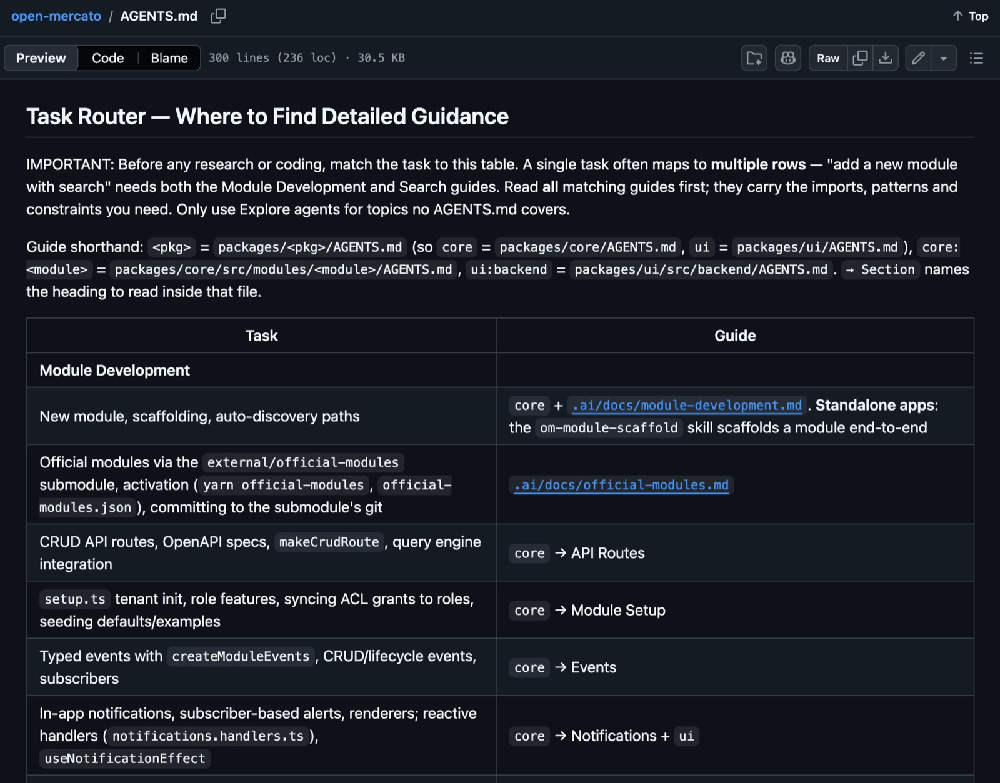
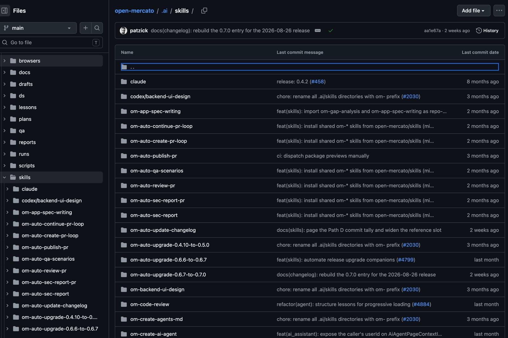
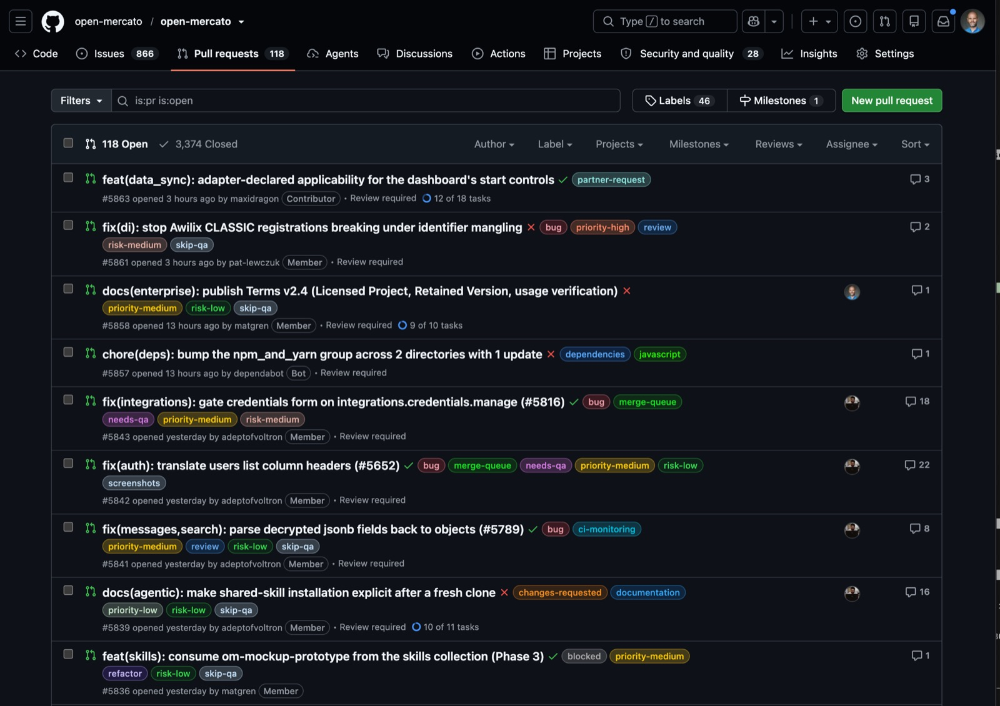
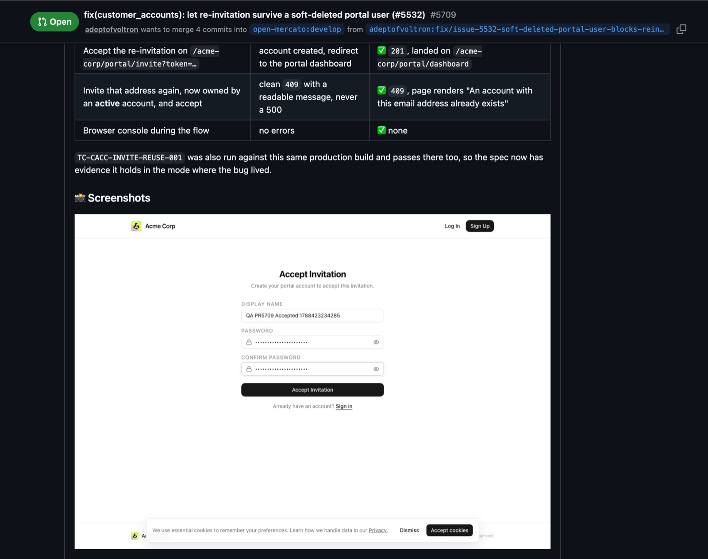
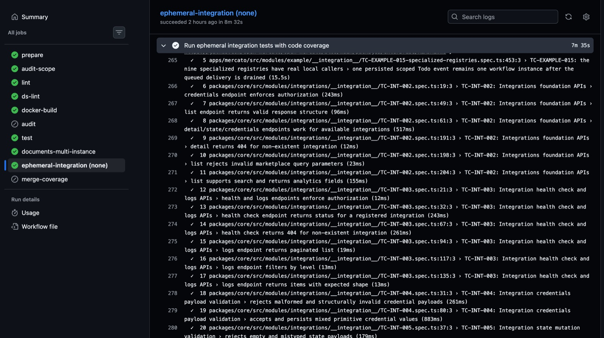
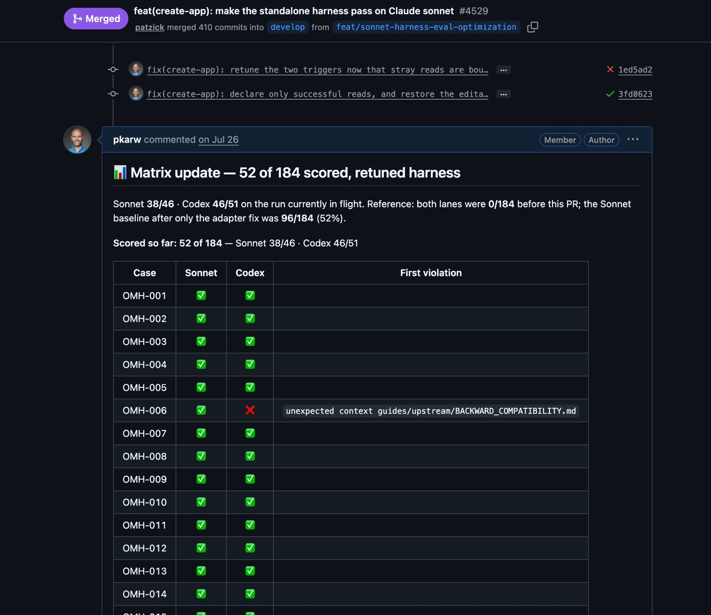

Closing the
Agentic Loop
How We Keep a 1.1 1.8M-Line
Codebase Moving 24/7

Start with 80% done.
github.com/open-mercato/open-mercatoAn open-source enterprise app framework — ERP, CRM, WMS, manufacturing. Enterprise patterns and business domains ship with it; Claude or Codex write the last 20% that makes it fit the business.
AI engineering at its core: the framework was built 100% with LLMs — and you build apps on it without a single human-written line.
300–600 PRs each
Next 20 minutes.
I know. You know.
The basics.
We started simple. Around 1K PRs later we knew we needed a Software Factory to keep it moving.
Keep things simple.
Every step was forced by volume, never by fashion.
One file.
It routes, it doesn't answer.
We get the Task Router to work — links to more precise instructions first.

Specs, coherent
by default.
Just markdown, dumped flat. Useful — but every author picked their own structure.
Coherent, project-oriented, staff-engineer standard — readable by the next agent, not just the author.
Skills are machines
in the factory.
github.com/open-mercato/skills
Before publishing open-mercato/skills, we went all local — every skill lived in .ai/skills/. Interactive, fun, and it did not scale.

Automate the SDLC and keep workflows coherent across the whole team — not just in one terminal.
One hackathon
broke the process.
"We got overwhelmed with the contributions. It was a sign: go autonomous or die."

om-auto-* goes wild.
Skills learned
to talk back.
Autonomous skills started communicating with us via GitHub Comments and Labels — not a dashboard we have to go check.

One pipeline, many agents.
Divide and conquer
with Cezar.
Running om-auto-* is cool. Running twenty in parallel is not. Cezar is our parallel coding orchestrator — MIT, native skills, GitHub-first.
It runs on my VPS. I coordinate tasks from my phone all day — and because of how the skills work, the interface I use most is GitHub itself.
No manual review.
A real safety net.
“You shouldn't be doing code review manually anymore.” — the Uncle Bob argument, taken seriously.
An ephemeral app boot with testcontainers state management — parallel agents on the same repo, all the way through GitHub CI.
Not a slide.
A green run.
Every PR — human or agent — spins up an ephemeral integration environment, runs the suite with coverage, tears down. Same pipeline, no exceptions.

Two contexts.
Three axes.
— what is to be done?
Optimize context.
Then drop a class.
The context-evaluator replays all 220 against each model we care about, and new cases arrive automatically from om-share-this-session — artifacts plus every conversation turn.
Context, retuned
by evidence.
The context is now optimized based on user feedback and eval cases — every retune has a paper trail.
github.com/open-mercato/open-mercato · PR #4529